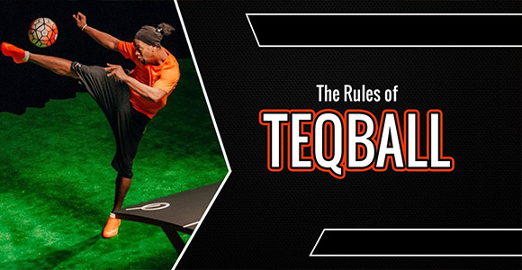

| Начало • Futsal • Speedcubing • Parkour• Teqball • Highdiving • Paintball • Sepak Takraw • Roller Derby • Kiteboarding |
| Teqball | |
|
|
История Играта е представена на международно ниво от Международната федерация по текбол (FITEQ). Редица футболисти от световна класа бяха привлечени от играта и след като бяха добавени към програмите за Азиатските плажни игри през 2021 г. и Европейските игри през 2023 г., спортът сега се стреми към включване в Олимпийските игри. |
|
Правила на играта 1. Teqball може да се играе с топки, използвани във футбола, като размер пет е официален и препоръчителен. 2.Teqball може да се играе от двама играчи (единична игра) или от четирима играчи (игра на двойки). 3.Текбол мачът се състои от най-добър от три сета. 4.Всеки сет се играе, докато играч/отбор достигне 12 точки. 5.Всеки играч/отбор има два опита да завърши успешен сервис. 6.Играчите/отборите сменят услугата след всеки четири точки. 7.Забранено е докосването на топката с една и съща част на тялото два пъти последователно |
 |
| Видеа | |